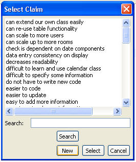
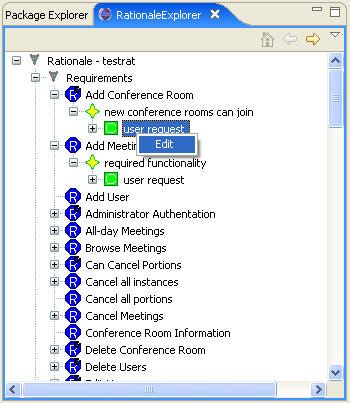
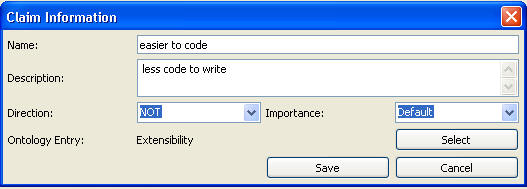

When we create or edit an argument, we could select the claim for or against the argument as well as creating a new claim by click "new" in the select claim window. Or we could edit an existing claim by right-click the name of an existing claim and choose edit or by double-clicking the name of the claim. See the following figures:


The following figure shows the Claim Editor. This is similar to the Argument Editor but with
fewer fields. The Direction indicates if the claim is that the alternative does
what the ontology entry says, such as “IS” Reduces Development Time, or that it
does not, as shown here by “NOT” Reduces Development Time. The user can also
specify an importance here or inherit it from the Argument Ontology.
When a claim is created the user must associate an ontology entry with it. This
is done using the “Select” button. This will bring up the ontology so the user
can choose an entry to associate.
